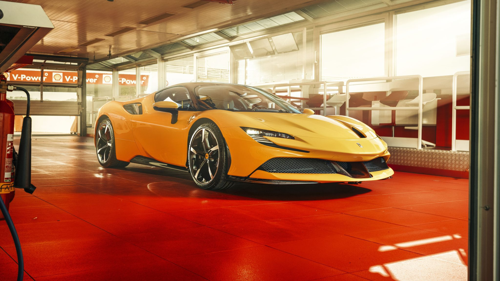

A Ferrari foi fundada em 1947, na Itália, por Enzo Ferrari. A marca nasceu com foco em carros de corrida e rapidamente ganhou fama pela alta performance e design marcante.
Nos anos 1950 e 1960, a Ferrari se consolidou na Fórmula 1 e em competições de endurance, tornando-se sinônimo de velocidade e prestígio. O logotipo do cavalo rampante virou ícone mundial.
Com o tempo, além das pistas, a Ferrari passou a produzir carros esportivos de luxo para as ruas, sempre em tiragem limitada e com preços elevados, reforçando sua exclusividade.
Hoje, a Ferrari é uma das montadoras mais desejadas do mundo, unindo tradição, inovação tecnológica e vitórias no automobilismo.
